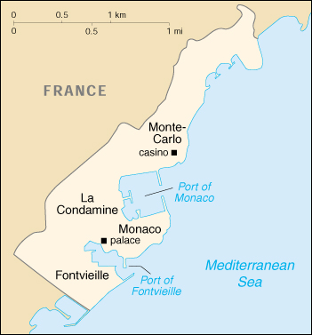

![[Country Flag of Monaco]](../flags/mn-lgflag.jpg)
| Monaco |
|
         |  | |
| Introduction |
Background: Economic development was spurred in the late 19th century with a railroad linkup to France and the opening of a casino. Since then, the principality's mild climate, splendid scenery, and gambling facilities have made Monaco world famous as a tourist and recreation center.
| Geography |
Location: Western Europe, bordering the Mediterranean Sea, on the southern coast of France, near the border with Italy
Geographic coordinates: 43 44 N, 7 24 E
Map references: Europe
Area:
total:
1.95 sq km
land:
1.95 sq km
water:
0 sq km
Area - comparative: about three times the size of The Mall in Washington, DC
Land boundaries:
total:
4.4 km
border countries:
France 4.4 km
Coastline: 4.1 km
Maritime claims:
territorial sea:
12 nm
Climate: Mediterranean with mild, wet winters and hot, dry summers
Terrain: hilly, rugged, rocky
Elevation extremes:
lowest point:
Mediterranean Sea 0 m
highest point:
Mont Agel 140 m
Natural resources: none
Land use:
arable land:
0%
permanent crops:
0%
permanent pastures:
0%
forests and woodland:
0%
other:
100% (urban area)
Irrigated land: NA sq km
Natural hazards: NA
Environment - current issues: NA
Environment - international agreements:
party to:
Biodiversity, Climate Change, Desertification, Endangered Species, Hazardous Wastes, Law of the Sea, Marine Dumping, Ozone Layer Protection, Ship Pollution, Wetlands, Whaling
signed, but not ratified:
Climate Change-Kyoto Protocol
Geography - note: second smallest independent state in world (after Holy See); almost entirely urban
| People |
Population: 31,693 (July 2000 est.)
Age structure:
0-14 years:
15% (male 2,449; female 2,336)
15-64 years:
62% (male 9,723; female 10,074)
65 years and over:
23% (male 2,907; female 4,204) (2000 est.)
Population growth rate: 0.48% (2000 est.)
Birth rate: 9.94 births/1,000 population (2000 est.)
Death rate: 13.06 deaths/1,000 population (2000 est.)
Net migration rate: 7.89 migrant(s)/1,000 population (2000 est.)
Sex ratio:
at birth:
1.05 male(s)/female
under 15 years:
1.05 male(s)/female
15-64 years:
0.97 male(s)/female
65 years and over:
0.69 male(s)/female
total population:
0.91 male(s)/female (2000 est.)
Infant mortality rate: 5.92 deaths/1,000 live births (2000 est.)
Life expectancy at birth:
total population:
78.84 years
male:
74.88 years
female:
83 years (2000 est.)
Total fertility rate: 1.76 children born/woman (2000 est.)
Nationality:
noun:
Monegasque(s) or Monacan(s)
adjective:
Monegasque or Monacan
Ethnic groups: French 47%, Monegasque 16%, Italian 16%, other 21%
Religions: Roman Catholic 90%
Languages: French (official), English, Italian, Monegasque
Literacy:
definition:
NA
total population:
99%
male:
NA%
female:
NA%
| Government |
Country name:
conventional long form:
Principality of Monaco
conventional short form:
Monaco
local long form:
Principaute de Monaco
local short form:
Monaco
Data code: MN
Government type: constitutional monarchy
Capital: Monaco
Administrative divisions: none; there are no first-order administrative divisions as defined by the US Government, but there are four quarters (quartiers, singular - quartier); Fontvieille, La Condamine, Monaco-Ville, Monte-Carlo
Independence: 1419 (beginning of the rule by the House of Grimaldi)
National holiday: National Day, 19 November
Constitution: 17 December 1962
Legal system: based on French law; has not accepted compulsory ICJ jurisdiction
Suffrage: 21 years of age; universal
Executive branch:
chief of state:
Prince RAINIER III (since 9 May 1949); Heir Apparent Prince ALBERT Alexandre Louis Pierre, son of the monarch (born 14 March 1958)
head of government:
Minister of State Michel LEVEQUE (since 3 February 1997)
cabinet:
Council of Government is under the authority of the monarch
elections:
none; the monarch is hereditary; minister of state appointed by the monarch from a list of three French national candidates presented by the French Government
Legislative branch:
unicameral National Council or Conseil National (18 seats; members are elected by popular vote to serve five-year terms)
elections:
last held 1 and 8 February 1998 (next to be held NA January 2003)
election results:
percent of vote by party - NA; seats by party - UND 18
Judicial branch: Supreme Court or Tribunal Supreme, judges named by the monarch on the basis of nominations by the National Council
Political parties and leaders: National and Democratic Union or UND [Jean-Louis CAMPORA]
International organization participation: ACCT, ECE, IAEA, ICAO, ICRM, IFRCS, IHO, IMO, Inmarsat, Intelsat, Interpol, IOC, ITU, OPCW, OSCE, UN, UNCTAD, UNESCO, UPU, WHO, WIPO, WMO
Diplomatic representation in the US:
Monaco does not have an embassy in the US
consulate(s):
New York
Diplomatic representation from the US: the US does not have an embassy in Monaco; the US Consul General in Marseille (France) is accredited to Monaco
Flag description: two equal horizontal bands of red (top) and white; similar to the flag of Indonesia which is longer and the flag of Poland which is white (top) and red
| Economy |
Economy - overview: Monaco, situated on the French Mediterranean coast, is a popular resort, attracting tourists to its casino and pleasant climate. The Principality has successfully sought to diversify into services and small, high-value-added, nonpolluting industries. The state has no income tax and low business taxes and thrives as a tax haven both for individuals who have established residence and for foreign companies that have set up businesses and offices. The state retains monopolies in a number of sectors, including tobacco, the telephone network, and the postal service. Living standards are high, roughly comparable to those in prosperous French metropolitan areas. Monaco does not publish national income figures; the estimates below are extremely rough.
GDP: purchasing power parity - $870 million (1999 est.)
GDP - real growth rate: NA%
GDP - per capita: purchasing power parity - $27,000 (1999 est.)
GDP - composition by sector:
agriculture:
NA%
industry:
NA%
services:
NA%
Population below poverty line: NA%
Household income or consumption by percentage share:
lowest 10%:
NA%
highest 10%:
NA%
Inflation rate (consumer prices): NA%
Labor force: 30,540 (January 1994)
Unemployment rate: 3.1% (1998)
Budget:
revenues:
$518 million
expenditures:
$531 million, including capital expenditures of $NA (1995)
Industries: tourism, construction, small-scale industrial and consumer products
Industrial production growth rate: NA%
Electricity - production: NA kWh
Electricity - production by source:
fossil fuel:
NA%
hydro:
NA%
nuclear:
NA%
other:
NA%
Electricity - consumption: NA kWh
Electricity - exports: NA kWh
Electricity - imports: NA kWh
Agriculture - products: none
Exports: $NA; full customs integration with France, which collects and rebates Monegasque trade duties; also participates in EU market system through customs union with France
Imports: $NA; full customs integration with France, which collects and rebates Monegasque trade duties; also participates in EU market system through customs union with France
Debt - external: $NA
Economic aid - recipient: $NA
Currency: 1 French franc (F) = 100 centimes
Exchange rates: euros per US$1 - 0.9867 (January 2000), 0.9386 (1999); French francs (F) per US$1 - 5.65 (January 1999), 5.8995 (1998), 5.8367 (1997), 5.1155 (1996), 4.9915 (1995)
Fiscal year: calendar year
| Communications |
Telephones - main lines in use: 31,027 (1995)
Telephones - mobile cellular: 2,560 (1994)
Telephone system:
automatic telephone system
domestic:
NA
international:
no satellite earth stations; connected by cable into the French communications system
Radio broadcast stations: AM 1, FM NA, shortwave 8 (1998)
Radios: 34,000 (1997)
Television broadcast stations: 5 (1997)
Televisions: 25,000 (1997)
Internet Service Providers (ISPs): 4 (1999)
| Transportation |
Railways:
total:
1.7 km
standard gauge:
1.7 km 1.435-m gauge
Highways:
total:
50 km
paved:
50 km
unpaved:
0 km (1996 est.)
Ports and harbors: Monaco
Merchant marine: none (1999 est.)
Airports: linked to airport in Nice, France, by helicopter service
Heliports: 1 (shuttle service between the international airport at Nice, France, and Monaco's heliport at Fontvieille)
| Military |
Military - note: defense is the responsibility of France
| Transnational Issues |
Disputes - international: none